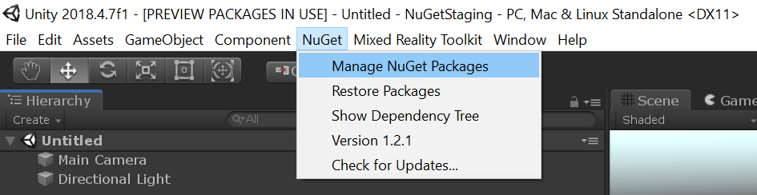
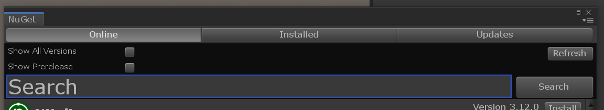
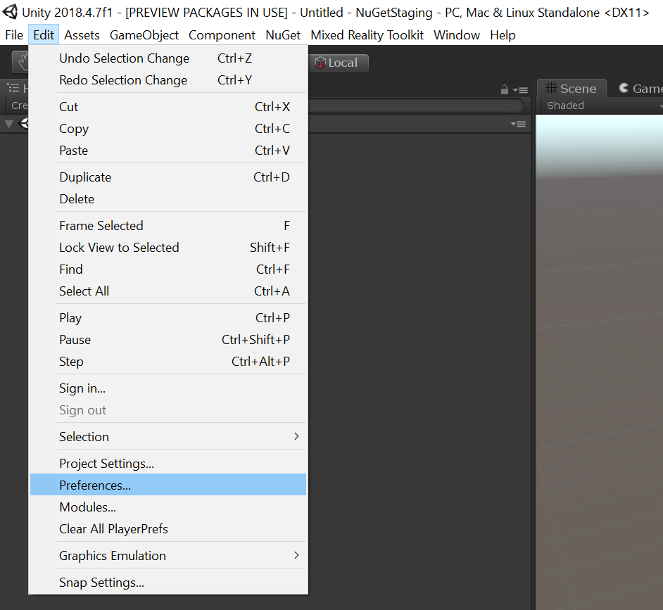
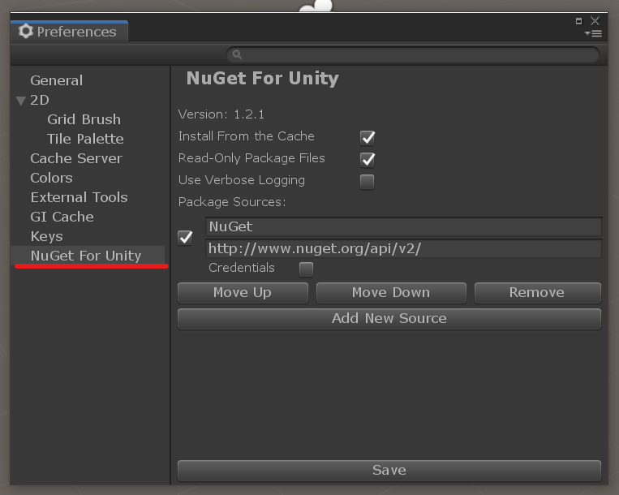
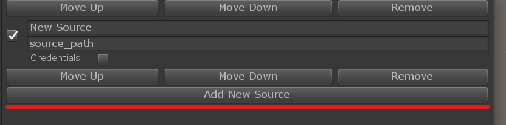
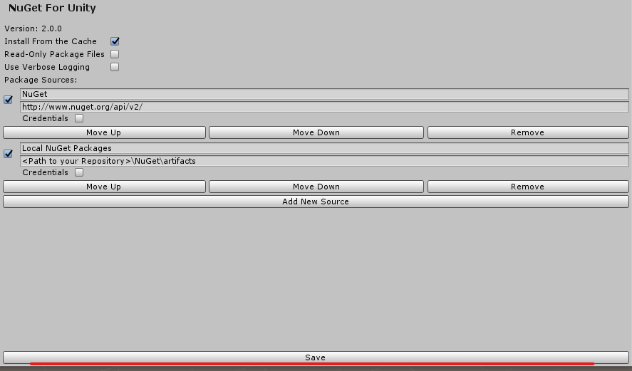
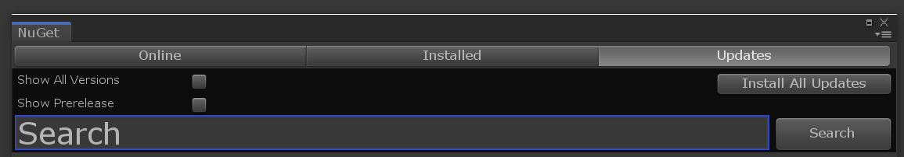

Mixed Reality Toolkit NuGet package
混合现实工具包(MRTK)现在作为NuGet包在NuGet.org上提供。使用NuGet版本的MRTK与使用.unitypackage有一些区别，请阅读下面的NuGet包注意事项 。如果遇到任何问题，使用此模板将问题存档。
Note
目前还不支持对现有项目进行迁移来使用MRTK作为NuGet包。通过NuGet使用MRTK只用于新项目。
安装NuGet包
按照以下说明将混合现实工具包作为NuGet包添加到您的项目中。
下载最新的NuGetForUnity .unitypackage。
- 如果已经安装了NuGetForUnity，请确保是版本2.0.0或更新的。
将包导入到Unity项目中，说明.
在Unity菜单栏，点击NuGet > Manage NuGet Packages.

在搜索框中，输入 Microsoft.MixedReality.Toolkit.

选择MRTK核心包:
- Microsoft.MixedReality.Toolkit.Foundation – MRTK的核心包。
(可选)选择MRTK可选包。
- Microsoft.MixedReality.Toolkit.Examples – 包含所有示例的包。
- Microsoft.MixedReality.Toolkit.Extensions – 包含扩展服务和/或数据提供程序的包。
- Microsoft.MixedReality.Toolkit.Tools – 包含一些随MRTK而来的工具(构建窗口等)。
更新MRTK NuGet包
对于这个项目，上面的步骤 1-2 只需要执行一次，而更新是一个简单得多的步骤。一旦在NuGet.org上有新的软件包(包括预发行版)，请遵循以下步骤:
- 在Unity菜单栏，点击NuGet > Manage NuGet Packages
- 切换到Updates选项卡。 -如果您想获得最新的预发行版本，请勾选*Show prerelease**框。
- 更新所需的包。
NuGet包注意事项
作为NuGet包发布的MRTK是一种新的分发机制，在选择是否使用MRTK的NuGet版本时，有几个关键的好处和考虑因素必须考虑。
从.unitypackage或source迁移到NuGet(尚不支持)
NuGet包由编译的二进制文件组成，而不是松散的脚本文件，C# 脚本资源标识符是不同的。因此，像MRTK包中的预制包这样的资源已经被更新，以引用适当的编译脚本。使用.unitypackage或MRTK源代码版本的项目也必须重新定位其资源，尽管有针对它的代码，但这还不是一个受支持的场景。
Important
目前还没有支持从.unitypackage或source迁移到NuGet的方法。当我们继续开发这个分发机制时，这将会改变。
编译的二进制文件(NuGet)对比源文件(.unitypackage)
由于NuGet包包含编译的二进制文件而不是脚本，这有两个主要的优点:
- 减少编译时间
- 相当少的C#项目文件在Visual Studio
调试混合现实工具包
在Unity和Visual Studio Tools for Unity中存在一些已知的问题，这些问题会阻止PDB在Visual Studio调试器中被轻松地调试。因此，尽管包中嵌入了pdb和源代码，但只有在本地构建时才能调试dll(请进一步阅读)。作为MSBuildForUnity的一部分，有一个解决方案正在构建，稍后会有更多更新。
本地构建NuGet包
使用来自MRTK的最新源代码，您可以在本地构建NuGet包并配置NuGetForUnity来获取它。
- Download the latest MRTK source.
- Execute the
scripts\packaging\createnugetpackages.ps1powershell script.- Specify the
-UnityDirectoryflag by passing the Editor folder of your Unity installation - Specify the
-Versionof the package to create, in x.x.x format. Make sure the version is higher than available on NuGet.org - Example:
.\createnugetpackages.ps1 -UnityDirectory "C:\Program Files\Unity\Hub\Editor\2018.4.14f1\Editor" -Version 2.3.2
- Specify the
- 构建成功后，使用NuGet包打开目标项目。
点击菜单 Edit > Preferences...

在左边，找到NuGet for Unity标签。

按下Add New Source，并将source_path替换为
<Path to your Repository>\NuGet\artifacts
在底部，按Save 按钮。

- 如果这是您第一次构建，或者版本是递增的，请遵循更新过程:
在Unity菜单栏，点击NuGet > Manage NuGet Packages.
切换到Updates选项卡。

将包更新为您刚刚构建的所需版本。
- 否则，只需删除
Assets\Packages文件夹，让NuGetForUnity恢复这些包。